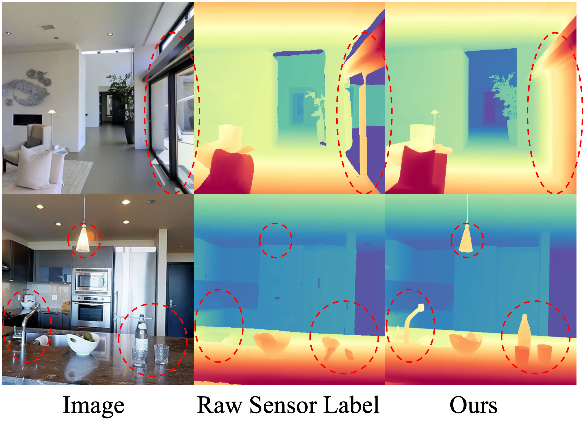
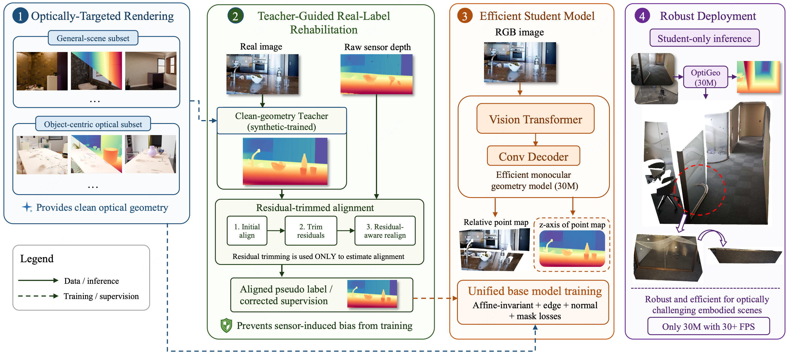
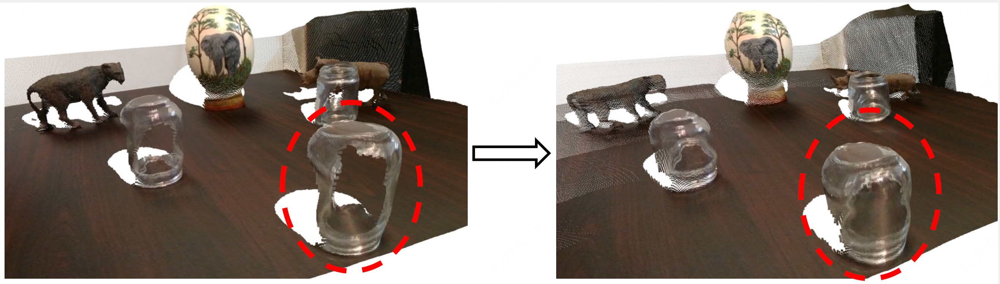
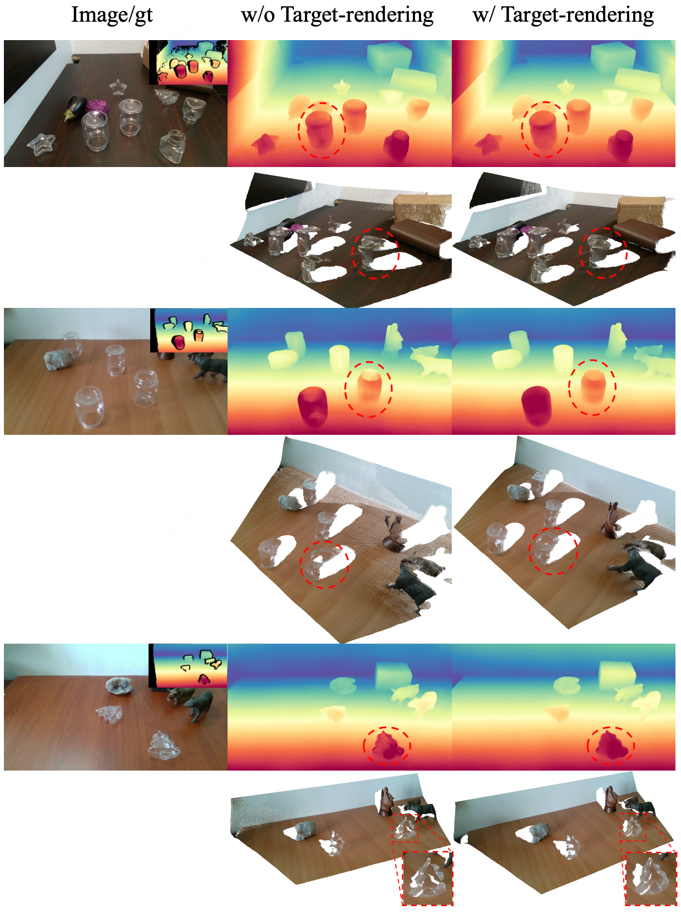
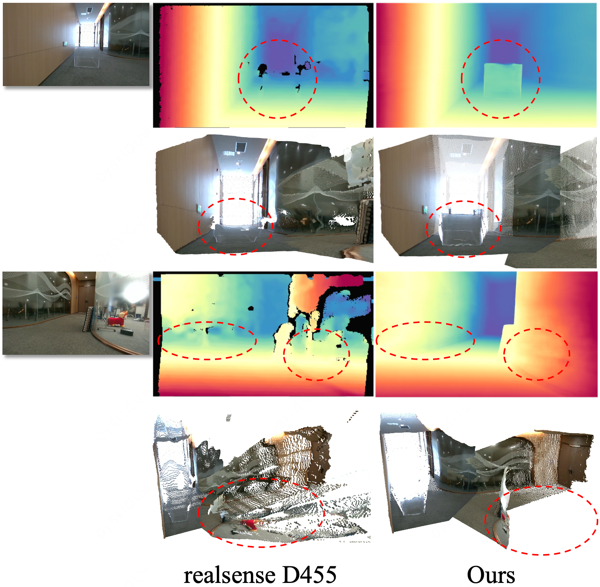
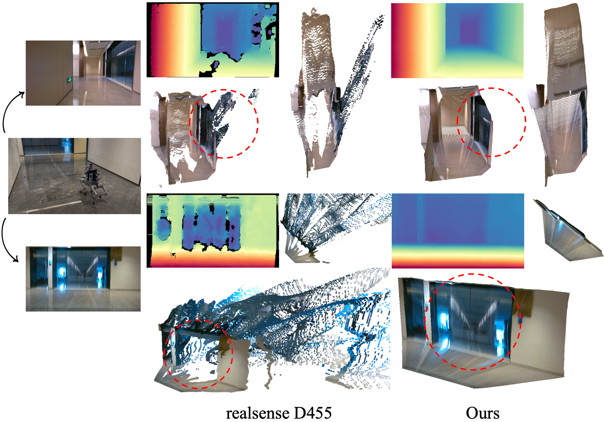

An efficient monocular geometry framework for robust embodied perception under optically challenging visual conditions.
We present OptiGeo, an efficient monocular geometry framework for embodied perception in optically challenging scenes. Transparent, reflective, and specular regions often corrupt real sensor depth through missing measurements, distorted surfaces, or background leakage, causing general monocular geometry models to inherit biased supervision. OptiGeo treats these optical failures as localized training-label bias rather than a separate transparent-object depth task. It rehabilitates real supervision with a clean-geometry teacher and residual-trimmed alignment, then injects compact transparency-targeted rendering as clean optical geometry supervision. The final deployed model is a compact 30M feed-forward student that improves transparent-region geometry while preserving broad zero-shot generalization and practical runtime for robotic perception.

Empirical finding. Optical failures in transparent and reflective regions are usually localized, but their labels can be systematically wrong because real depth sensors leak background depth, miss glass objects, or distort specular surfaces. OptiGeo therefore focuses on correcting biased real supervision while keeping the broad scene-level generalization learned from large mixed-domain data.

OptiGeo pipeline. A clean-geometry teacher is trained only on synthetic supervision to avoid inheriting real sensor artifacts. For real images, residual-trimmed alignment calibrates the teacher to reliable sensor pixels and suppresses high-residual regions that often correspond to transparent or reflective failures. Corrected real labels and clean rendered samples then train a compact 30M student for efficient feed-forward inference.

Compact rendering, not narrow fine-tuning. OptiGeo augments broad real and synthetic training data with a small transparency-targeted rendering set. Object-centric scenes provide clean supervision for glassware, refractive boundaries, and local occlusion structures, while general indoor scenes preserve wider scene-level geometry and prevent over-specialization.

Robustness with efficiency. The ablations show that residual-trimmed real-label rehabilitation improves transparent-scene geometry and boundary quality, while targeted rendering supplies clean local optical supervision. At inference time OptiGeo deploys only the compact student, improving optical robustness without test-time refinement, multi-view fusion, or auxiliary transparent-object modules.


Downstream perception. In real transparent and reflective scenes, OptiGeo recovers more coherent object and surrounding geometry, supporting embodied agents that must reason about glass doors, mirrors, transparent containers, and other visually deceptive obstacles.
@misc{liu2026optigeo,
title={OptiGeo: Efficient Monocular Geometry for Embodied Perception in Optically Challenging Scenes},
author={Muxin Liu and Tianbo Liu and Jing Xia and Xiaoyang Lyu and Xiaoshan Wu and Bo Wang and Peng Dai and Zhongrui Wang and Shaoshuai Shi and Xiaojuan Qi},
year={2026},
note={Project page},
}